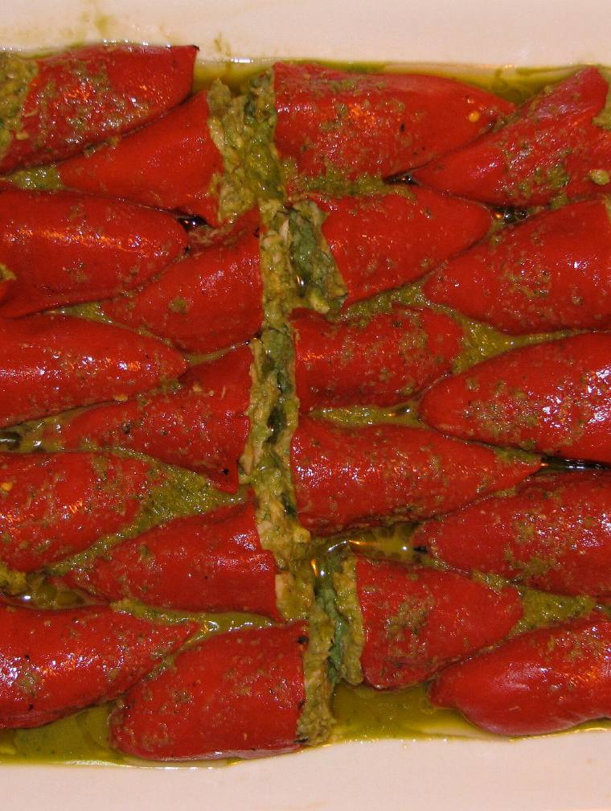

Entrées espagnoles et tapas

Entrées espagnoles et tapas
Pimientos del piquillo rellenos
Piquillos farcis
Préparation : 30 min
Repos : 1 h
Cuisson : 30 min
Ingrédients (pour 6 personnes)
- 12 poivrons del piquillo
- 200 g de porc maigre haché
- 200 g de veau haché
- 150 g de béchamel épaisse
- 1 gros oignon
- 1 cuillère à café de paprika doux
- 2 œufs
- farine, huile d’olive, sel
Quantités adaptées. Les temps de cuisson ne sont pas recalculés.
- Faire fondre l’oignon sans coloration, ajouter viandes et paprika, cuire 10 minutes, bien à cœur.
- Lier à la béchamel, saler, refroidir.
- Farcir les poivrons et les raffermir au réfrigérateur.
- Passer dans farine et œuf battu, dorer à la poêle.
D’après Spain.info, office espagnol du tourisme. Traduit et reformulé.